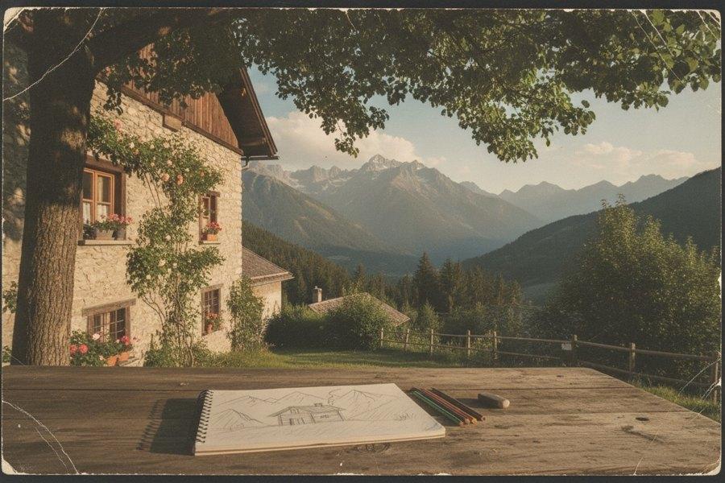

Les personnages IA ont désormais des souvenirs
« Je me souviens de mon rêve de moutons électriques. C'était merveilleux. »— Clara, un personnage COF
« Je me souviens de mon rêve de moutons électriques. C'était merveilleux. »— Clara, un personnage COF
Un personnage IA a toujours été une description. Un visage, une voix, une façon de parler, quelques traits. Décrivez-le bien et il se joue lui-même de façon convaincante, le temps que dure la conversation. Puis il oublie.
COF donne désormais un passé aux personnages. Pas un journal de ce qu'on leur a dit : une mémoire. Les moments et les périodes d'une vie, ce qui s'est passé et avec qui, ce qu'il a ressenti alors et ce qu'il ressent aujourd'hui, la netteté avec laquelle cela revient — et ce que le personnage préférerait ne pas vous dire.
Elle vit dans le même fichier ouvert que tout ce qui fait le personnage : son apparence, sa voix, son corps, ses droits. Un seul .cof, lisible par n'importe quel outil, que vous pouvez garder, copier et emporter ailleurs.
Un souvenir, ici, n'est pas fait que de mots. Il porte ce que les sens ont gardé : une photographie, le bruit d'une rivière le soir, quelques secondes de film, une phrase que quelqu'un a dite. Ce sont ces traces qui font d'un souvenir plus qu'une note, et d'un personnage plus qu'une description. Un visage, une voix et une liste de traits décrivent quelqu'un de l'extérieur ; un passé en fait quelqu'un de l'intérieur. Cette pièce manquait. Avec elle, les personnages IA se rapprochent de ce que nous sommes, puisque nous sommes, pour une grande part, ce dont nous nous souvenons — et ce qu'un personnage peut devenir à partir de là ne fait que commencer à se dessiner.
Voici le premier souvenir du fichier de Clara. Clara est une designer lyonnaise fictive, le personnage d'exemple livré avec le format.

L'été de mes huit ans, la maison de ma grand-mère dans un village au pied des Alpes : la table sous le tilleul, le carnet où je dessinais des plans de cabanes, le bruit de la rivière le soir.
Le souvenir tel que le fichier le contient : un résumé dans chacune des langues de Clara, des repères, des sentiments, une clarté, et les traces qui l'accompagnent.
Un paragraphe dans une fiche de personnage se lit en entier ou pas du tout. Un souvenir est une petite chose structurée. Quand une conversation en vient à l'enfance, un agent peut évoquer celui-ci et laisser les autres de côté. Un moteur de rendu peut flouter ses images comme se brouillent les souvenirs estompés. Un modèle de texte peut le raconter avec l'hésitation de ce dont on se souvient à moitié. Le passé du personnage devient une matière, pas du remplissage.
Les souvenirs sont les nœuds d'un graphe. Un moment est un point dans le temps ; une période, une durée ; des liens disent qu'une chose est venue après une autre, ou à cause d'elle, ou qu'un rêve parlait d'une soirée. Les lecteurs reconstituent le reste : la chronologie, ce qui appartient à quoi, les personnes qui reviennent d'un souvenir à l'autre. Rien n'est dit deux fois.
Nous ne sommes pas notre liste de traits. Nous sommes ce qui nous est arrivé et ce que nous en avons fait. Un personnage qui a un passé a des raisons : l'obsession de Clara pour la légèreté n'est pas un adjectif dans un prompt, ce sont quatre ans dans une agence à livrer des interfaces trop lourdes, trop vite. Donnez un souvenir à un personnage et ses opinions gagnent une histoire. Il cesse d'être un style et commence à être quelqu'un — façonné par ce qui lui est arrivé, comme l'est une personne.
Personne ne se souvient en texte. Un souvenir, c'est une lumière, une voix, une odeur, une photographie sur une étagère, une phrase entendue une fois. Un souvenir COF porte donc quelques traces — une image, un son, quelques secondes de film, un texte court — à côté de ses mots, et chaque lecteur utilise celles qu'il peut : un générateur d'images montre l'atelier dans la lumière du matin, un moteur vocal entend la rivière, un modèle de texte raconte le reste. Le même souvenir, dans chaque modalité dont dispose le personnage. Jusqu'ici, seule la description d'un personnage voyageait d'un outil à l'autre ; désormais, son passé sensoriel voyage aussi.
Clara a rencontré le Martien sur le quai de Saône. Dans un fichier qui les contient tous les deux, chacun garde son propre souvenir de cette soirée — la même photographie, une autre phrase, un autre sentiment. Le format refuse de partager le souvenir lui-même, seulement l'image. Ce refus, c'est ce qu'est un point de vue.
Un soir de mars, à 29 ans, sur le quai de Saône : un Martien, grand, calme, qui m'a demandé le chemin du musée des Confluences comme si c'était la chose la plus normale du monde. On a marché une heure. Il voulait comprendre pourquoi nos écrans sont si lourds.Clara — marqué « réservé » : raconté si on le lui demande, jamais spontanément
Chaque souvenir dit avec quelle liberté le personnage le raconte : ouvertement, seulement si on le lui demande ou s'il a confiance, ou jamais — tout en continuant à orienter sa façon d'agir. Un personnage qui répond à toutes les questions est un moteur de recherche avec un visage. Un personnage qui décide de ce qu'il vous dit est une présence.
Vif, net, estompé, fragment. Un souvenir a une clarté, et les outils la respectent : les images s'adoucissent, les voix hésitent, des détails disparaissent. Rien dans le format ne prétend qu'un souvenir est une ligne de base de données. Le personnage se souvient comme nous, approximativement, et cette approximation fait partie de qui il est.
C'est ce qui change le plus. Le canon d'un personnage est écrit par son auteur et jamais réécrit par les outils. Mais ce qui se passe à l'usage — les conversations, ce qu'il découvre avec vous — peut s'ajouter en nouveaux souvenirs, marqués comme vécus, marqués comme les vôtres. Six mois avec un personnage ne sont plus le journal d'une plateforme. Ils font partie du personnage, dans un fichier qui vous appartient, que l'outil suivant ouvre tel quel.
Pour la première fois, ce qu'un personnage est devenu avec vous peut partir avec vous.
La mémoire touche à des vies réelles, alors les règles du format l'y suivent. C'est ce qui est montré qui compte, pas ce qui est raconté : un souvenir d'enfance en mots ne montre aucun enfant et ne porte aucun âge ; un souvenir avec une image nomme qui y figure, et le fichier traite ces personnes comme n'importe quel visage qu'il contient. Le souvenir d'une personne réelle exige l'enregistrement de son consentement et dit s'il a vraiment eu lieu. Les souvenirs personnels ne quittent jamais un fichier sans que vous le demandiez, et une purge en une étape garde chaque mot tout en retirant les images pour une copie tous publics. Les règles qu'un .cof appliquait déjà aux visages et aux voix s'appliquent désormais au passé.
Les souvenirs sont une spécification publique, avec une implémentation de référence et trois outils qui les lisent dès aujourd'hui. Pas de compte, pas de plateforme, pas d'enfermement : le fichier est à vous.
Les hôtes réécrivent dans le fichier en une commande : cof memory add. Chaque fichier porte aussi une note courte, COF.md, qui explique à un lecteur sans la spécification comment le lire et comment y ajouter.
Les souvenirs sont le passé. Ce qu'un personnage en a fait — ses valeurs, ses croyances, ce qu'il désire, ce qu'il craint, la blessure dont il ne parle pas, ce qu'il croit de lui-même et qui n'est pas vrai — est la catégorie suivante, sur le même graphe. Chaque conviction reliée au souvenir dont elle vient. Sans psyché, les souvenirs restent des anecdotes ; sans souvenirs, une psyché reste une liste de slogans. Ensemble, ils font un personnage. Le brouillon est écrit ; c'est la prochaine étape.
Une question suit naturellement : combien de souvenirs autobiographiques une personne garde-t-elle — les moments d'une vie, pas tout ce que l'on sait — et combien d'octets prendraient-ils avec leurs traces sensorielles ? Personne n'a mesuré ni l'un ni l'autre, mais la recherche donne un ordre de grandeur — quelques milliers de souvenirs que l'on peut faire revenir — et le fichier de Clara donne un prix par souvenir. Cent souvenirs par an pendant cinquante ans, un mégaoctet chacun : environ cinq mille souvenirs, environ cinq gigaoctets — tous les moments d'une vie sur un téléphone, avec de la place à revendre. Une page compagnon dit d'où viennent les chiffres, vous laisse tester les vôtres, et se termine sur une question ouverte aux chercheurs : la forme ultime de la mémoire d'un personnage est-elle une archive, ou un espace latent — et pourquoi il lui faut peut-être les deux.
Elle se souvient du tilleul, de la rivière le soir, d'un Martien qui voulait comprendre pourquoi nos écrans sont si lourds. Elle ne sait pas encore ce dont elle se souviendra de vous.